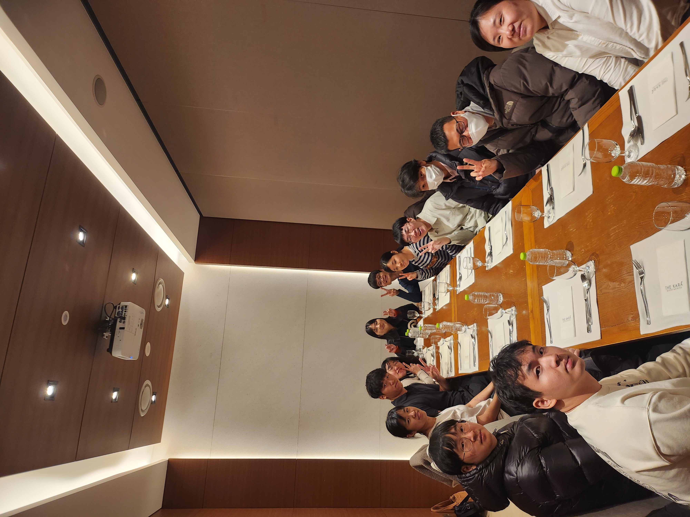
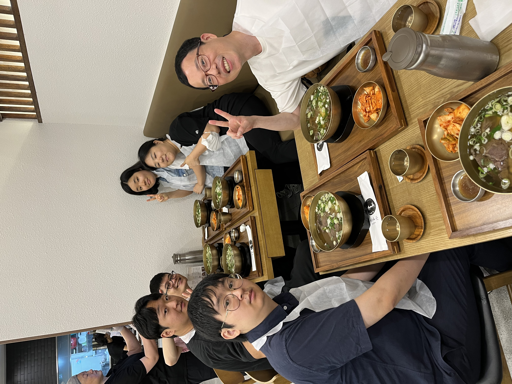
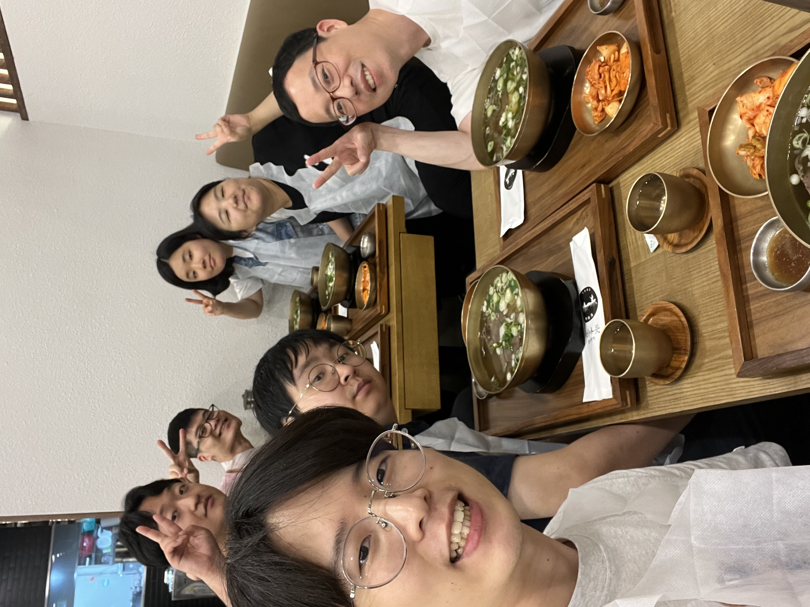
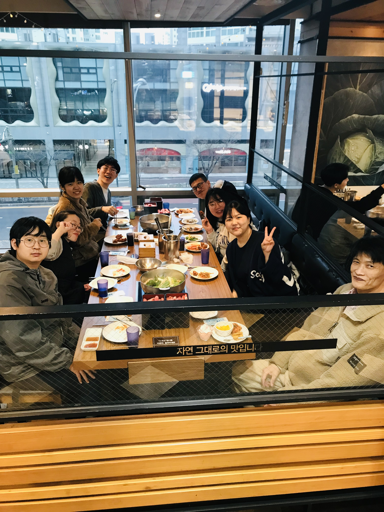
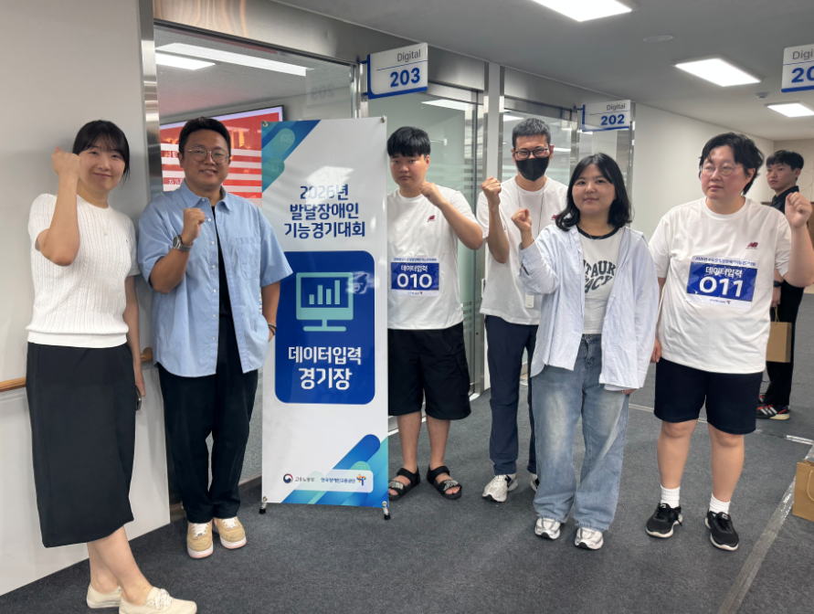

Lyndsey.r
깊은 관심과 넓은 시야로 장애사원의 올바른 업무 태도와 직장 예절을 선도하며, 모두가 존중받는 조직 문화를 만들기 위해 노력했습니다.
포용적 직장 문화 리더
정서적 케어 및 신뢰 기반 멘토링
체크리스트 기반 올바른 직장 생활 정착
3년 차의 세심함으로 임직원 만족도 제고
"동료의 성장과 행복에서 최고의 자아효능감을 발견합니다."
장애사원 크루가 일터에서 온전하고 자신감 넘치는 구성원으로 적응하도록 돕습니다.
크루 한 사람 한 사람의 눈높이에 맞춘 소통으로 두터운 라포(Rapport)를 형성하고, 기본 직장 예절부터 자립적 업무 수행까지 크루들의 다채로운 가능성을 함께 펼쳐가고 있습니다.
사회적 약자에 대한 깊은 이해와 현장 케어 역량을 다져온 실무 경력입니다.
치매 어르신 대상 전문 케어 및 맞춤형 프로그램 운영
LG전자 자회사형 장애인 표준사업장
공감과 신중함을 바탕으로 조직에 온기를 더하는 인재입니다.
"따뜻한 공감 능력을 가진 세심한 현장 전문가"
타인의 감정과 상태를 기민하게 파악하는 깊은 공감 능력을 갖추고 있습니다. 상대방의 상황과 눈높이에 맞춘 세심한 케어와 유연한 태도로 현장에 빠르게 적응하며 온화한 팀워크 분위기를 조성합니다.
조직 내 심리적 안정감을 형성하고 구성원 간 갈등을 완화시키는 긍정적 영향력 발휘
상대방을 배려하고 상황을 신중하게 고민하다 보니 결정을 내리거나 생소한 업무에 임할 때 사전 검토 시간이 다소 소요될 수 있습니다.
• ‘명확한 우선순위 리스트’ 작성 및 판단 가이드라인 수립으로 빠른 실행력 도모
• 철저한 사전 조사와 단계별 실천 계획으로 주도적 업무 수행력 강화
진정성 있는 멘토링과 효율적인 직무 수행을 뒷받침하는 차별화된 역량입니다.
크루 개개인의 특성과 정서적 변화를 기민하게 파악하여, 안정적인 일상 유지와 안심할 수 있는 근무 환경을 유도하는 세심한 멘토링을 제공합니다.
근태 관리, 업무 태도, 소통 매너 등 직장생활의 기본 수칙을 맞춤형 체크리스트 및 1:1 반복 교육을 통해 체득시키고 안정적인 근태를 만들어 왔습니다.
3년 간 쌓아온 현장 업무의 노하우로 효율적인 백오피스 업무 및 업무환경개선을 위해 노력하였습니다.
일상 속 정서적 교류로 쌓아올린 두터운 라포(Rapport)와 코칭 성과
업무 시간에만 머무르지 않고 회식과 친목 자리에 적극적으로 참여하며 장애사원 크루들과 자연스럽게 눈높이를 맞췄습니다. 함께 식사하고 이야기를 나누는 과정을 통해 크루 개개인의 가치관, 성향, 말치 못한 고충까지 세심하게 이해할 수 있었고, 이렇게 형성된 단단한 라포(Rapport)는 현장에서의 신뢰감 있는 코칭과 성장의 가장 강력한 밑바탕이 되었습니다.




체크리스트 기반의 반복 교육과 깊은 라포 형성을 통해, 초기 업무 이탈 위험이 있던 크루가 조직에 안정적으로 적응하여 주도적인 직장생활을 이어가게 되었습니다.
평소 두터운 신뢰관계를 기반으로 크루의 업무 내외적 고충과 변화를 사전에 감지하고 세심하게 케어합니다.
지각과 업무 이탈이 잦던 크루에게 개인 맞춤형 체크리스트와 직관적인 동작 루틴을 수립해 주었습니다.
직장 예절 수칙에 대한 지속적이고 긍정적인 가이드를 제공함으로써, 스스로 근태를 지키는 주도적인 변화를 이끌어냈습니다.
직장예절을 직접 코칭한 장애사원 크루(샘)가 수도권장애인기능경기대회에 도전하여 동메달 수상이라는 감동적인 결실을 거두었습니다.
개개인의 숨은 잠재력을 믿고 이끌어낸 헌신적인 서포트와 끈기 있는 맞춤형 연습으로 이러한 쾌거를 이루었습니다.

단단한 라포와 현장 경험을 바탕으로, 조직 전체의 포용적 가치를 확장합니다.
상호 존중과 신뢰 기반의 포용적 문화 지향
다양한 사회적 약자와 함께 근무하며 얻은 깨달음을 바탕으로, 서로의 차이를 인정하고 존중할 때 비로소 조직의 건강한 성장이 이뤄진다는 가치관을 확립했습니다.
크루가 직장 예절을 익히고 자립적인 구성원으로 자리 잡는 모습을 곁에서 도우며 가장 큰 보람을 느낍니다. 동료의 행복이 곧 나의 일터 내 존재 가치임을 믿습니다.
자신의 자리에서 묵묵히 책임을 다하는 모든 크루와 임직원들의 모습에서 배움을 얻으며, 겸손함과 성실함으로 신뢰받는 멘토가 되고자 합니다.
주도적 역할 확장을 통한 체계적 도약 로드맵
파트의 업무 프로세스를 완벽히 숙지함과 동시에, 개별 크루들과 세심한 일대일 소통 및 회식·친목 활동을 통해 단단한 라포(Rapport)를 형성하겠습니다. 이를 통해 기본 근태 지도를 안정화하고 완벽한 스낵 큐레이션 및 크루 케어를 달성하겠습니다.
과거 노인주간보호센터 외부 행사 인솔 경험과 사내 친목 모임 주도 노하우를 결합하여, 사내 행사 및 조직 프로젝트에 주도적으로 참여하겠습니다. 파트를 넘어 링키지랩 전체의 포용적 가치와 신뢰 문화를 널리 알리고 확장하는 핵심 인재로 도약하겠습니다.